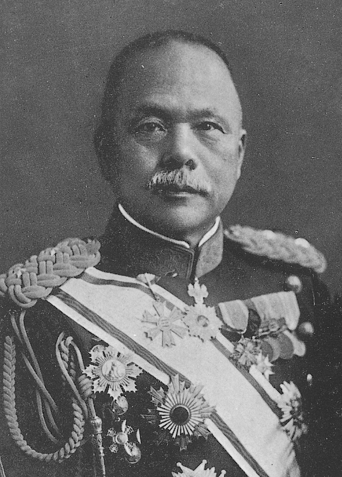

江
江副浩正
えぞえ・ひろまさ
リクルート創業者・前会長
役割：未公開株譲渡をめぐる贈賄側の中心人物
その後：懲役3年・執行猶予5年。2003年判決確定1
1984年〜2003年
リクルート側は、店頭公開前で値上がりが見込まれたリクルートコスモス株を政界・官界・NTT関係者らに譲渡した。1
1988年6月の川崎市助役への未公開株譲渡報道を起点に疑惑は4ルートへ拡大し、東京地検特捜部は贈賄側4人と収賄側8人の計12人を起訴した。2
竹下登首相の退陣表明と自民党の参院選大敗を経て、2003年3月の江副浩正判決まで約14年に及ぶ事件となった。3

1988年6月18日、朝日新聞は、川崎市の助役だった小松秀照に対してリクルートグループの不動産子会社リクルートコスモスの未公開株が譲渡され。公開後に約1億円の利益を得た疑いを報じた。リクルート公式も、この報道を事件の出発点としている。株式は現金献金ではなく、店頭公開による値上がりが見込まれた未公開株だった。川崎市の再開発とリクルートの進出をめぐる関係が、最初の焦点になった。1988年3月には神奈川県警が川崎市助役の株式問題を調査したが、調査中断との研究記録がある。6月19日には小松秀照が辞表を提出したとの記録があり、6月26日には川崎市議会で百条委員会設置案が否決されたとされる。この段階では、株式の譲渡、自治体の再開発、警察の調査。議会の検証が別々の動きとして記録されていた。朝日新聞横浜支局の報道が、これらの接点を社会に知らせる契機になった。14
法政大学大原社会問題研究所は、リクルートが店頭公開直前の未公開株を有力政治家らに譲渡し、その見返りに便宜供与を受けていた贈収賄事件と整理している。株式や献金を受けた疑いのある人物として森喜朗、渡辺美智雄、加藤六月、加藤紘一、中曽根康弘、藤波孝生、安倍晋太郎、宮澤喜一。竹下登らの名前が報じられた。ただし、報道・国会で名前が挙がった全員が刑事起訴されたわけではない。財務省資料は、店頭登録の1か月前にリクルート社を通じて延べ83人へ株式が売られ、譲受者が公開後の売却で多くの利益を得た事案と整理している。未公開株の譲渡は、受領者が市場で得る利益と、譲渡する側が行政・政治上の接点を得る期待を同時に生む取引として国会で問題になった。後に有罪が確定した12人と、名前が報じられた人物の全体は一致せず、疑惑を示す記録と裁判所の認定は分けて読む必要がある。2
1988年10月、リクルート社元社長室長が逮捕され、捜査の突破口となった。問題は政界だけでなく、NTT、労働省。文部省の関係者へ広がった。財務省の政策史は、リクルート事件をNTTルート、労働省関係ルート、文部省関係ルート。政府関係者を巻き込んだ複合的な疑惑事件と記している。東京地検特捜部は贈賄側4人と収賄側8人の計12人を起訴し、リクルート公式は全員の有罪判決確定を明記している。31
リクルート事件¹）は、昭和61年10月30日に店頭登録したリクルート・コスモス社（不動産デベロッパー）の株式について、その店頭登録の1か月前の昭和61年9月に、昭和60年4月に第三者割当をしたドゥ・ベスト社など5社から株式をいわば買い戻す形でリクルート社を通じて延べ83人に株式を売り、その譲受者は公開後の売却により多くの利益を得たという事案である。折しも消費税法案の審議が予定されており、その阻止を図った野党は、この譲受者の中に現職閣僚を含む政治家がいるのではないかとの立場からの国会論議を行った。
意味：当局の政策史が、未公開株の譲渡を単なる個別取引ではなく、第三者割当・公開利益・政治家関与を含む事件として整理している。
1988年11月4日の国会では、未公開株の譲渡、公開後の利益。行政上の地位が時系列で問われた。文部省ルートでは、高石邦男への1万株譲渡と、江副浩正の教育課程審議会・大学審議会との接点が指摘された。竹下登首相は、証券取引法、税法、刑法。政治家の道義上の問題という四つの論点に分けて説明した。宮澤喜一大蔵大臣は元秘書を介した問題について国会で謝罪した。野党は、政府税調、大学審議会、NTT回線リセール、スーパーコンピューター導入、川崎市や多摩ニュータウンの土地払い下げなど。株式の利益と行政上の接点を列挙した。政府側も、公開前に特定価格で取得し高値で売却する行為は一般投資家から見て不公平という制度的問題があると答弁した。5
NTTルートでは、リクルート側とNTT幹部との関係、回線リセール事業。米国製スーパーコンピューターの導入などが問題化した。1989年2月13日、江副浩正、小林宏、式場英、長谷川寿彦が逮捕され、その後に真藤恒、加藤孝。高石邦男らも逮捕・起訴された。株式譲渡が単なる献金か、職務に関連する賄賂かが裁判の争点となり、藤波孝生は一審無罪から控訴審逆転有罪となった。36
○二見委員 甚だ残念なことではございますけれども、このリクルート問題に対して、我が党から実弟名義での株の譲渡を受けた代議士が明らかになりまして、本人は先日実弟ともども記者会見をいたしまして、また党内でも役職を辞任をいたしました。また、ただいま承るところによりますと、社会党の某代議士も議員を辞職されたという報もございます。我々は、このリクルート問題というものを何としてでも解明しなければ、これは日本の政治の大きな不信を助長させるばかりであると考えております。 ○竹下内閣総理大臣 私は、この場でリクルート問題に関する見解を四つに分けて申し上げております。一つは、何回も申すようですが、証券取引法上の問題であり、二つ目は税法上の問題であり、三つ目は今日問題になっております刑法上の問題であり、四つ目が私を含む政治家の道義上の問題である、こういうふうに申し上げておるところであります。
意味：追及側は株譲渡を政治不信の核心と捉え、竹下首相自身も法的問題と政治家の道義的問題を区別して認めている。
竹下登首相の周辺については、リクルート社から5,000万円を借りたことが明らかとなり、政治的責任が問題化した。竹下首相は1989年4月25日に退陣表明し、翌日、元秘書の青木伊平が自殺した。財務省資料は両者を記録するが、自殺の動機や事件との因果関係について確定した説明は示していない。同年7月の参院選で自民党は大敗し、事件は政治改革議論の契機となった。1989年6月3日に竹下内閣は総辞職し、7月23日の参院選では議席関係が大きく変化した。事件は個別の株式譲渡だけでなく、政権の説明、政治家の辞職、行政幹部の責任。報道による発覚を同時に問う事案として扱われた。37
○竹下内閣総理大臣 したがって、私ども、特に四番目の問題につきまして、やはりせっかく汗をかいて倫理綱領というものが確立された今日でございますので、これを拳々服膺しつつ、今後とも身を引き締めて対応していかなければならぬということであろうかと思っております。前の二つにつきましては、これは私どもいわゆる再発防止という点からいたしまして、この法律、行政等の整備について全力を挙げなければならない課題だというふうに考えております。
意味：首相答弁は、事件を刑事責任だけでなく、政治家が倫理綱領を守れなかった問題として語っている。
1989年12月15日に東京地裁で初公判が開かれ、事件関係の裁判は長期化した。公判回数は判決を含めて322回と紹介されており、12人起訴に対して1人当たり平均約26.8回となる。1990年に真藤恒、1992年に加藤孝の有罪が確定し、1994年には池田克也に懲役3年・執行猶予4年の判決が出た。藤波孝生は1997年に控訴審で懲役3年・執行猶予4年、追徴金4,270万円の逆転有罪判決を受け、1999年に最高裁で確定した。高石邦男の有罪も2000年に最高裁で確定した。2003年3月4日、江副浩正に懲役3年・執行猶予5年の判決が言い渡され、リクルート公式は判決を受けた企業として倫理綱領、社員教育。コンプライアンス体制の強化を表明した。裁判では、株式の値上がりを知り得る立場、株式の入手困難性、職務との関連性。受領者側の認識が個別に争われた。全員の有罪判決確定という結果は、報道や国会で名前が挙がった人物の範囲と同一ではない。事件の発端から江副浩正の判決まで約14年を要し、その間に受領者側の辞職、首相の退陣表明、政党の選挙敗北。複数の控訴審と最高裁判断が重なった。長期化した裁判記録には、株式の譲渡先、公開前後の価格差、行政職務との関係、当事者の認識について。事件ごとに異なる事実認定が記録された。さらに、贈賄側と収賄側で判決時期が異なり、同じ事件名の下で裁判所が扱った事実と争点は一つではなかった。刑事裁判の結果、企業側の公式説明、国会での政治的説明、報道機関の記録を並べることで。事件の経過と責任の範囲が確認できる。81
○宮澤国務大臣 事実関係につきましては、先般元秘書の報告に基づきまして申し上げたとおりでございますが、私自身がまことに至らないことがございまして、申しわけないことに思っております。今後深く反省いたします。
意味：宮澤大蔵大臣は、秘書を介した株式問題について、詳細な反論ではなく自身の落ち度と謝罪を答弁している。


| 川崎市役所 | 神奈川県川崎市川崎区宮本町1 | 川崎市助役への株式譲渡報道の発端 | 25 |
| 東京地方裁判所 | 東京都千代田区霞が関1-1-4 | 江副らの刑事裁判 | 26 |
| 東京地方検察庁 | 東京都千代田区霞が関1-1-1 | 東京地検特捜部の捜査・起訴 | 27 |
| 国会議事堂 | 東京都千代田区永田町1-7-1 | 証人喚問・政治責任・ルートの追及 | 28 |
| 首相官邸 | 東京都千代田区永田町2-3-1 | 竹下内閣の政治責任・退陣 | 29 |
| NTT旧本社周辺 | 東京都千代田区大手町 | NTTルート・スーパーコンピューター問題 | 3 |
| 文部省旧庁舎周辺 | 東京都千代田区霞が関3丁目 | 文部省ルート | 5 |
| 東京・小菅周辺 | 東京都葛飾区小菅 | 江副逮捕後の拘置施設報道地点 | 30 |
本件の金銭・株式の流れは、未公開株を受け取った者が店頭公開後に売却して利益を得る構造と、政治家・官僚・NTT幹部の職務上の接点が併せて問題化した点にある。個別の名義・取得資金・全取引額が本調査で一括確認できない箇所は未確認とした。31
えぞえ・ひろまさ
リクルート創業者・前会長
役割：未公開株譲渡をめぐる贈賄側の中心人物
その後：懲役3年・執行猶予5年。2003年判決確定1
ふじなみ・たかお
衆議院議員・元官房長官
役割：政界ルートの受領側として起訴
その後：懲役3年・執行猶予4年・追徴金4,270万円。最高裁で確定32
いけだ・かつや
衆議院議員
役割：政界ルートの受領側として起訴
その後：懲役3年・執行猶予4年23
たけした・のぼる
内閣総理大臣
役割：周辺への5,000万円借入が問題化し、国会で道義的責任を説明
その後：1989年4月25日に退陣表明3
あおき・いへい
竹下登の元秘書
役割：竹下首相周辺の資金問題に関係
その後：退陣表明翌日に自殺。動機・因果関係は未確認3
しんとう・ひさし
元NTT会長
役割：NTTルートの受領側
その後：収賄罪。有罪判決確定32
はせがわ・としひこ
NTT元取締役
役割：NTTルートの受領側
その後：有罪判決8
しきば・ひで
NTT元取締役
役割：NTTルートの受領側
その後：懲役1年6月・執行猶予3年6
たかいし・くにお
元文部事務次官
役割：文部省ルートで1万株譲渡が国会で指摘された受領側
その後：懲役2年6月・執行猶予4年。最高裁で確定23
かとう・たかし
元労働事務次官
役割：労働省ルートの受領側
その後：収賄罪。有罪判決確定32
かの・しげる
元労働省課長
役割：労働省ルートの受領側
その後：懲役1年・執行猶予3年23
こばやし・ひろし
元ファーストファイナンス副社長
役割：贈賄側として株式譲渡に関係
その後：懲役1年・執行猶予2年23
たつみ・まさお
元リクルート社長室長
役割：株式譲渡実務に関係した贈賄側
その後：一審無罪、控訴審で懲役1年・執行猶予3年8
こまつ・ひでてる
川崎市助役
役割：未公開株譲渡の報道で事件の発端となった受領者
その後：1988年6月に問題化1
みやざわ・きいち
大蔵大臣
役割：秘書・周辺の株式問題について国会で謝罪答弁
その後：刑事有罪は未確認5
なかそね・やすひろ
元内閣総理大臣
役割：NTTスーパーコンピューター問題で野党の証人喚問要求の対象
その後：刑事認定は未確認3
もり・よしろう
自民党政治家
役割：株譲渡疑惑の対象として名前が挙がった
その後：刑事有罪は未確認2
わたなべ・みちお
自民党政治家
役割：株譲渡疑惑の対象として名前が挙がった
その後：刑事有罪は未確認2
かとう・こういち
自民党政治家
役割：株譲渡疑惑の対象として名前が挙がった
その後：刑事有罪は未確認2
相関図は、未公開株の出し手と受け手、NTT・文部省・労働省の各ルート。国会と報道の動きを分けて示す。線の種類は、上下関係、金銭、対立、告発。闇の人脈との接点を表す。
資金の出し手と受け手。川崎市の再開発・リクルート進出に関連して、リクルートコスモス未公開株が小松助役に譲渡されたことが事件の発端となった。リクルート公式1
資金の出し手と受け手。江副側から政界側へ未公開株が譲渡され、藤波は受託収賄罪で有罪確定した。コトバンク32
資金の出し手と受け手。池田も政界ルートで起訴され、懲役3年・執行猶予4年となった。判決一覧23
資金の出し手と受け手。NTTルートで株式譲渡が問題化し、真藤は有罪確定した。コトバンク32
資金の出し手と受け手。江副の教育行政への接近と高石への1万株譲渡が国会で結び付けて追及された。国会会議録5
資金の出し手と受け手。労働省ルートの株式譲渡・贈収賄事件として両者の関係が刑事事件化した。リクルート公式1
盟友。ファーストファイナンスを介した株式譲渡で、双方が贈賄側として起訴された。法政大学大原社会問題研究所6
上司と部下。リクルート社内で株式譲渡実務に関係し、辰巳は一審無罪後、控訴審で有罪となった。広島大学学位論文8
上司と部下。青木は竹下の元秘書で、竹下の退陣表明翌日に自殺した。事件との因果関係は公的には未確認。財務省3
資金の出し手と受け手。竹下首相周辺への5,000万円借入が明らかになり、政治的責任が問題化した。コトバンク32
上司と部下。NTTスーパーコンピューター問題に関連し、野党が中曽根の証人喚問を要求した。財務省3
対立・確執。宮沢本人は国会で「至らないこと」を謝罪したが、刑事責任の有罪認定は確認できない。国会会議録5
資金の出し手と受け手。教育審議会との関係と株式譲渡の時期が国会で問題視された。国会会議録5
対立・確執。野党は中曽根喚問や事件全容解明を要求し、政府側の対応を「リクルート隠し」と批判した。参院本会議録14
対立・確執。朝日新聞が川崎市助役問題を報じ、神奈川県警の調査中断後に事件が社会問題化したと研究資料に記録される。朝日新聞系論考33
裏切り・告発。企業側は事件後、「社会に迷惑をかけた」と認め、経営理念・倫理綱領・社内規定を整備した。リクルート公式1
○二見委員 国民はこのリクルートの株ばらまきに率直かつ素朴な疑問を抱いております。それは、何のために政治家や高級官僚に、公開直後に売り抜ければ莫大な利益が上がるとわかっている株を譲渡したのかということであります。政府税調の委員になりたかったのか。あるいは大学審議会のメンバーに入りたかったのか。あるいはＮＴＴ回線リセールに何かがあったのか。スーパーコンピューター導入に際して何があったのか。あるいは民活導入に際して川崎市や多摩ニュータウンの土地払い下げに何があったのか。
意味：株式の利益と、審議会・NTT・土地政策などの行政上の接点を結び付け、疑惑の「見返り」を具体的に列挙している。
本調査で確認できる闇の人脈は、政界・官界・NTT幹部への未公開株譲渡と資金提供の接点である。総会屋、暴力団、仕手筋、海外口座。タックスヘイブンが事件の主要スキームとして認定されたことは確認できない。疑惑・指摘と有罪判決を区別して示す。
政治家、秘書、政党関係者 認定
真藤恒、長谷川寿彦、式場英 認定
高石邦男、江副浩正 認定
加藤孝。鹿野茂 認定
竹下登、青木伊平、リクルート社 指摘
中曽根康弘、NTT 確認できない
組織名・人物名 確認できない
組織名・人物名 確認できない
○二見委員 きのうは元文部次官であった高石氏が一万株の譲渡を受けたという事実が明らかになりました。御存じのように江副さんは、ここ数年間文部省に急接近をしてきた人であります。江副さんは、六十年九月には教育課程審議会委員になり、一年後の六十一年九月には一万株の株の譲渡を行い、そしてさらに一年後の六十二年の秋には大学審議会の委員に任命をされております。この間、高石氏は初等中等局長をやり、そして文部次官を歴任をしておりまして、まさに文部行政の中枢にいた人であります。 きのうの文部大臣の記者会見あるいは午前中の文部大臣の御答弁の中で、職務権限とはかかわり合いがない、ただ上がってきた書類に判こを押しただけだとおっしゃいますけれども、そんな単純なものではないと私は直観をいたしております。
意味：江副の審議会就任や高石への株譲渡と高石の文部行政上の地位を時系列で並べ、職務権限との無関係論を追及している。
| 東京地裁 | 2003-03-04 | 懲役3年・執行猶予5年 |
贈賄罪。確定1
| 一審 | 未確認 | 無罪 |
| 控訴審 | 1997-03 | 懲役3年・執行猶予4年・追徴金4,270万円 |
| 最高裁 | 1999年 | 確定 |
受託収賄罪。確定32
| 東京地裁 | 1994-12 | 懲役3年・執行猶予4年 |
受託収賄罪。確定23
| 裁判所 | 1990年 | 懲役2年・執行猶予3年 |
収賄罪。確定23
| 裁判所 | 未確認 | 懲役2年・執行猶予3年 |
収賄罪。確定8
| 裁判所 | 未確認 | 懲役1年6月・執行猶予3年 |
収賄罪。確定23
| 最高裁 | 2000-10 | 懲役2年6月・執行猶予4年 |
収賄罪。確定23
| 裁判所 | 1992年 | 懲役2年・執行猶予3年 |
収賄罪。確定23
| 裁判所 | 未確認 | 懲役1年・執行猶予3年 |
収賄罪。確定23
| 裁判所 | 未確認 | 懲役1年・執行猶予2年 |
贈賄罪。確定23
| 一審・控訴審 | 未確認 | 一審無罪、控訴審で懲役1年・執行猶予3年 |
贈賄罪。確定8
| 裁判所 | 未確認 | 懲役2年・執行猶予3年 |
贈賄罪。確定23
| 本調査 | 未確認 | 事件全体を対象とする確定民事判決は未確認 |
民事責任。未確認1
| 本調査 | 未確認 | 本事件に直接関係する原文資料・処分一覧は未確認 |
行政処分。未確認34
リクルート事件¹）は、昭和61年10月30日に店頭登録したリクルート・コスモス社（不動産デベロッパー）の株式について、その店頭登録の1か月前の昭和61年9月に、昭和60年4月に第三者割当をしたドゥ・ベスト社など5社から株式をいわば買い戻す形でリクルート社を通じて延べ83人に株式を売り、その譲受者は公開後の売却により多くの利益を得たという事案である。折しも消費税法案の審議が予定されており、その阻止を図った野党は、この譲受者の中に現職閣僚を含む政治家がいるのではないかとの立場からの国会論議を行った。
意味：当局の政策史が、未公開株の譲渡を単なる個別取引ではなく、第三者割当・公開利益・政治家関与を含む事件として整理している。
○二見委員 甚だ残念なことではございますけれども、このリクルート問題に対して、我が党から実弟名義での株の譲渡を受けた代議士が明らかになりまして、本人は先日実弟ともども記者会見をいたしまして、また党内でも役職を辞任をいたしました。また、ただいま承るところによりますと、社会党の某代議士も議員を辞職されたという報もございます。我々は、このリクルート問題というものを何としてでも解明しなければ、これは日本の政治の大きな不信を助長させるばかりであると考えております。 ○竹下内閣総理大臣 私は、この場でリクルート問題に関する見解を四つに分けて申し上げております。一つは、何回も申すようですが、証券取引法上の問題であり、二つ目は税法上の問題であり、三つ目は今日問題になっております刑法上の問題であり、四つ目が私を含む政治家の道義上の問題である、こういうふうに申し上げておるところであります。
意味：追及側は株譲渡を政治不信の核心と捉え、竹下首相自身も法的問題と政治家の道義的問題を区別して認めている。
○竹下内閣総理大臣 したがって、私ども、特に四番目の問題につきまして、やはりせっかく汗をかいて倫理綱領というものが確立された今日でございますので、これを拳々服膺しつつ、今後とも身を引き締めて対応していかなければならぬということであろうかと思っております。前の二つにつきましては、これは私どもいわゆる再発防止という点からいたしまして、この法律、行政等の整備について全力を挙げなければならない課題だというふうに考えております。
意味：首相答弁は、事件を刑事責任だけでなく、政治家が倫理綱領を守れなかった問題として語っている。
○宮澤国務大臣 事実関係につきましては、先般元秘書の報告に基づきまして申し上げたとおりでございますが、私自身がまことに至らないことがございまして、申しわけないことに思っております。今後深く反省いたします。
意味：宮澤大蔵大臣は、秘書を介した株式問題について、詳細な反論ではなく自身の落ち度と謝罪を答弁している。
○二見委員 国民はこのリクルートの株ばらまきに率直かつ素朴な疑問を抱いております。それは、何のために政治家や高級官僚に、公開直後に売り抜ければ莫大な利益が上がるとわかっている株を譲渡したのかということであります。政府税調の委員になりたかったのか。あるいは大学審議会のメンバーに入りたかったのか。あるいはＮＴＴ回線リセールに何かがあったのか。スーパーコンピューター導入に際して何があったのか。あるいは民活導入に際して川崎市や多摩ニュータウンの土地払い下げに何があったのか。
意味：株式の利益と、審議会・NTT・土地政策などの行政上の接点を結び付け、疑惑の「見返り」を具体的に列挙している。
○二見委員 きのうは元文部次官であった高石氏が一万株の譲渡を受けたという事実が明らかになりました。御存じのように江副さんは、ここ数年間文部省に急接近をしてきた人であります。江副さんは、六十年九月には教育課程審議会委員になり、一年後の六十一年九月には一万株の株の譲渡を行い、そしてさらに一年後の六十二年の秋には大学審議会の委員に任命をされております。この間、高石氏は初等中等局長をやり、そして文部次官を歴任をしておりまして、まさに文部行政の中枢にいた人であります。 きのうの文部大臣の記者会見あるいは午前中の文部大臣の御答弁の中で、職務権限とはかかわり合いがない、ただ上がってきた書類に判こを押しただけだとおっしゃいますけれども、そんな単純なものではないと私は直観をいたしております。
意味：江副の審議会就任や高石への株譲渡と高石の文部行政上の地位を時系列で並べ、職務権限との無関係論を追及している。
○国務大臣（中島源太郎君） 安永委員御指摘のリクルート非公開株の譲渡を文部省の前事務次官高石邦男氏名義で奥さんが購入をされておったという事実につきまして、私はそれが本人であれ夫人であれ、大変慎重さを欠いた行為としてまことに残念に考えております。特に文教行政を誠心誠意進める上におきまして、各委員の皆様方にも大変な御熱意を持って取り組んでいただいておる、こういう時期であればこそ、なおこの慎重さを欠いた行為は残念至極と言わざるを得ないわけでございます。私としては、さらに御当人から事情聴取をいたしますとともに、省内に対しまして厳正な職務の遂行をいたしますように、事務次官、官房長に指示をいたしました。
意味：文部大臣は、名義が本人か夫人かにかかわらず、行政幹部による未公開株取得を慎重さを欠く行為と認めている。
○村山（喜）委員 店頭登録後に有利に売り抜けて、その前に一株千二百円で入手した人も七十六人の安定株主の中にある、それから、第三者割り当て増資で銀行筋が二千五百円、そして事業会社等に対する、三十七社一個人ですか、これがやはり二千五百円、それを今度はまた再度譲渡を受けまして三千円口、いろいろありまして、五千二百七十円で売り抜けた人もある。その後、株が上がりまして七千円台にまで上がったが、今はぐっと下がりまして二千円台でそこそこだ、こういうような状況の中にある。 ○角谷政府委員 しかしながら、今、村山委員御指摘のように特定の方が公開に先立ちましてあらかじめいわば特定の値段で株を取得いたしまして、それを高値で売り抜けるという行為は、株式公開市場のあり方からしますと、確かに一般大衆投資家の目から見れば不公平ではないかという制度的な問題がございます。
意味：国会答弁の中で、安価な取得から公開後の売却までの価格差が示され、政府側も一般投資家から見た不公平性を認めている。
○国務大臣（竹下登君） いわゆるリクルート問題について、政治家、閣僚では私と宮澤大蔵大臣の周辺にあっていろいろな議論がなされておることは事実でございます。大蔵大臣の場合、みずから、あるいは秘書のお方がそれの譲渡を受けたという事実はございません。私だけでございます。 これにつきましては、これがよしんば経済行為そのものであったといたしましても、やはり私ども大変情報の入りやすい立場にあるわけでございますので、政治家として基本的には倫理綱領というようなものに常日ごろ徹しておれば、当然我々の周辺もそれに影響を受けるべきものであるという意味において私自身が深く反省をしておると、こういうことでございます。
意味：竹下は株譲渡を自分の周辺で受けた事実を認め、「経済行為」であっても政治家として問題があると述べている。
○市川正一君 今日、とどまるところを知らないリクルート疑惑と金権政治による汚職は、我が国民主政治の根幹を揺るがす深刻な事態となっております。総理はこのリクルート疑惑の本質をどう認識し、さらに、それにかかわるみずからの責任をどう自覚しているのか、一国の宰相として今改めてこのことが厳しく問われているのであります。 あなたは、リクルート問題が発覚したとき、経済取引だと開き直りましたが、今でも自分とリクルートとのさまざまな関係を単なる経済行為と考えているのですか。まず、この肝心な点についてしかと明確に答えていただきたいのであります。 この事件の深刻さは、中曽根、竹下という二代にわたる総理大臣がリクルート疑惑の核心にあるということであります。総理、あなたの親戚名義で買い受け、売却して利益を得たリクルートコスモスの一万株が、実は江副氏の指示で当時幹事長であったあなたあてに譲渡されたものであるという疑惑がますます深まっています。
意味：野党側は、竹下周辺の株式問題を個別の経済取引ではなく、二代の首相を含む政治権力の問題として追及している。
３、60 年3 月の請託の有無 辰巳の検察官調書は比較的に具体的かつ詳細であり、その信用性を疑うべき特段の事情もない。そうすると、被告人が官庁の青田買い防止の依頼を受けたことは明白であるというべきである。 ４、本件各小切手供与の賄賂性に関する被告人の認識の有無 江副、辰巳は、各検察調書において、その賄賂性を自認している。被告人は本件小切手の供与の賄賂性を認識していたことの証明は十分であるというべきである。 ５、リクルートコスモス株譲渡の賄賂性に関する被告人の認識の有無 このような未公開株が一般人には入手困難であり、店頭登録されれば確実に値上がりすることを知っていたことや、株式を売却して、自宅購入資金に充てる意図を有していたことなどを総合すると、被告人がその賄賂性を認識していたことは十分に推認できる。
意味：控訴審は、未公開株の入手困難性や値上がり見込みと売却目的を総合して、藤波側の賄賂認識を推認している。
2003年3月4日、弊社創業者 江副浩正氏に対する有罪判決を、社として厳粛に受け止めております。 事件を契機に企業としてのあり方、社会との関わり方を見直し、倫理綱領の制定、社員教育の徹底など、コンプライアンス体制の強化に取り組んでまいりました。 今後、より一層厳格なコンプライアンス経営が求められていく中で、弊社といたしましても、さらに高いレベルを目指す努力を重ねてまいります。
意味：事件後の会社自身の公式文書であり、有罪判決の受け止めと、倫理綱領・社員教育・コンプライアンス強化への転換を表明している。
証券取引審議会が「株式公開制度の在り方について―問題点とその改善策―」を取りまとめたとする研究資料がある。35
事件を契機に選挙制度と政治資金制度の抜本改革が政治課題となった。35
リクルートは事件後、経営理念、倫理綱領。社内規定の整備を開始した。1
未公開株を政治家・官僚らに提供することへの社会的・企業倫理上の警戒が強まった。ただし特定の法改正との直接因果は未確認である。35
国会で、証券取引法・税法・刑法・道義的責任を分けて説明する必要性が議論された。5
江副側：株式譲渡を定期的な献金・政治活動上の支援として捉え、全てが賄賂ではないと争ったと判決報道にある。24
東京地裁・控訴審：未公開株の入手困難性、値上がり見込み、売却目的などを踏まえ。賄賂性を認定・推認したと報じられている。11
藤波側：政治献金と職務に関係する賄賂の区別を争った。32
控訴審・最高裁：一審無罪から控訴審逆転有罪となり、最高裁が上告を棄却して有罪が確定した。23
竹下側：問題を刑事責任だけでなく、政治家の道義的責任として説明した。5
野党：株式譲渡の背後に許認可、審議会、NTT事業などへの便宜供与があったのではないかと追及した。5
報道・国会：中曽根康弘、安倍晋太郎、宮澤喜一。森喜朗らの名前を疑惑・周辺関係として取り上げた。2
調査資料：公的資料で名前が挙がることと、有罪判決があることは同じではなく、刑事起訴された12人と区別する。1